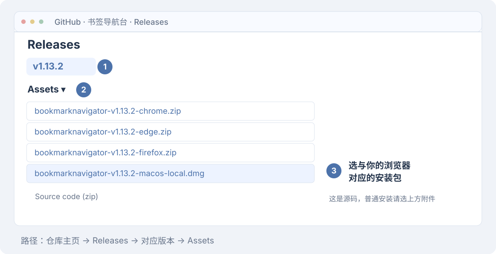
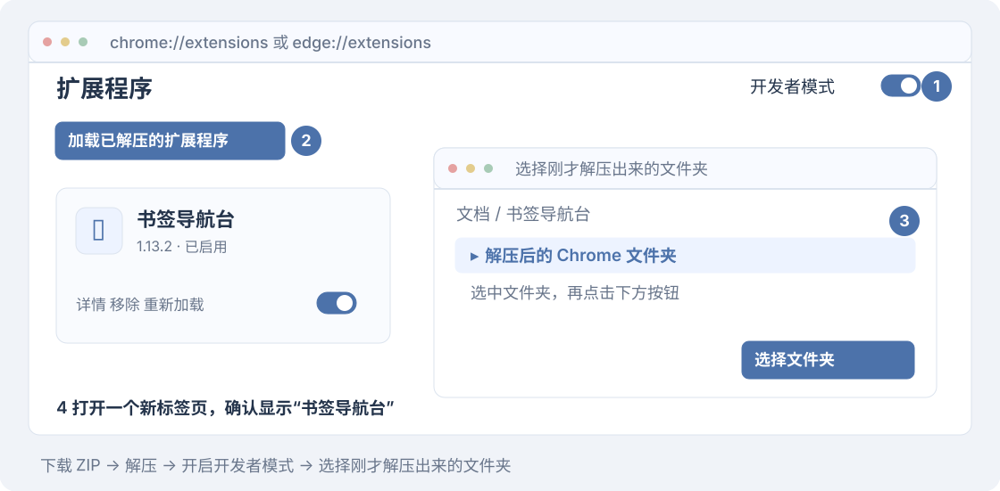
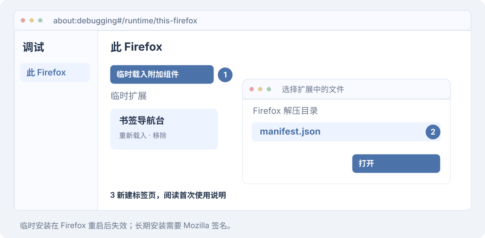
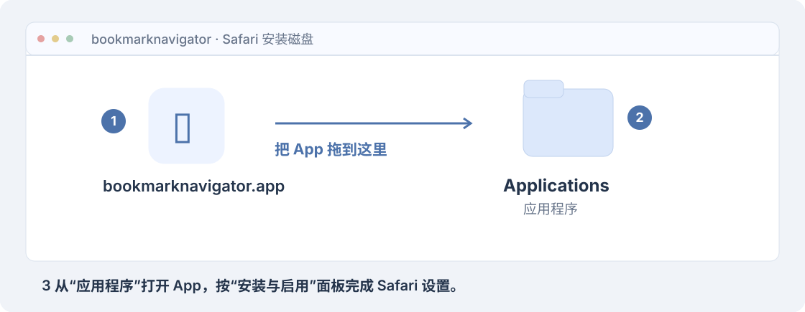
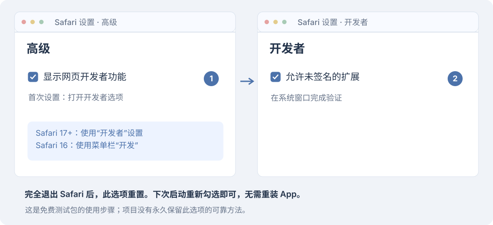
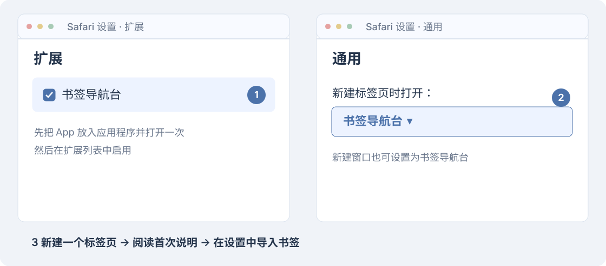
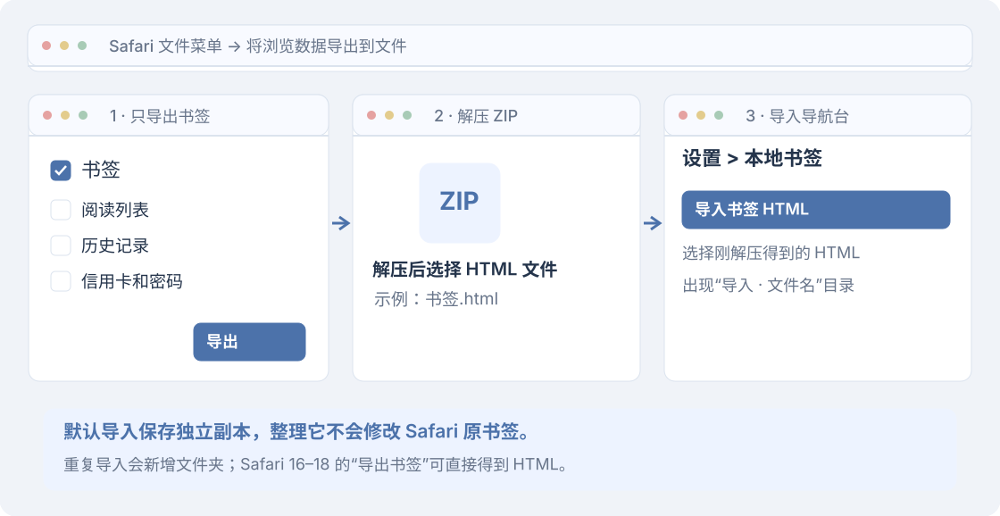

v1.13.2 · 离线文档
本页目录
安装教程
先下载安装包，再选择你使用的浏览器，照着对应步骤安装。
下载安装包
点击下表中的文件名，直接下载对应安装包。需要查看全部文件时，打开 v1.13.2 下载页面。
| 浏览器 | 点击下载安装包 |
|---|---|
| Chrome | bookmarknavigator-v1.13.2-chrome.zip |
| Edge | bookmarknavigator-v1.13.2-edge.zip |
| Firefox | bookmarknavigator-v1.13.2-firefox.zip |
| Safari | bookmarknavigator-v1.13.2-macos-local.dmg |

普通用户下载上表中的文件即可。Safari 的 App ZIP 可作为 DMG 的备用格式；Source code 和 safari-web-extension.zip 是源码或开发资源。
选择浏览器
找到你使用的浏览器，按对应步骤安装。
下方显示 Chrome / Edge 的安装步骤。
Chrome / Edge
- 解压安装包。 将下载的 ZIP 解压，得到一个扩展文件夹。把它放在固定位置，例如“文档/书签导航台”，以后保留这个文件夹。
- 打开扩展管理页。 Chrome 地址栏输入
chrome://extensions；Edge 输入edge://extensions，按回车。 - 开启开发者模式。 打开页面上的“开发者模式”开关，点击“加载已解压的扩展程序”。Edge 中可能显示为“加载解压缩的扩展”。
- 选择刚才解压出来的文件夹。 在弹出的窗口中选中它，再点击“选择文件夹”。
- 打开新标签页。 左上角显示“书签导航台”，阅读首次使用说明后继续。浏览器原有书签会自动出现，无需导入。

如果提示找不到清单文件，通常是选到了外面多包的一层文件夹。打开它，选里面的扩展文件夹再试一次；正确的文件夹中能看到 manifest.json。
Firefox
- 解压安装包。 将下载的 Firefox ZIP 解压。
- 打开调试页。 地址栏输入
about:debugging#/runtime/this-firefox，按回车。 - 加载扩展。 点击“临时载入附加组件”。在弹出的窗口中打开刚才解压的文件夹，选中
manifest.json，点击“打开”。 - 打开新标签页。 阅读首次使用说明后继续，浏览器原有书签会自动出现。

这是临时安装，Firefox 重启后需要重新加载。长期安装需要 Mozilla 签名。Mozilla 说明
Safari
适用于 macOS 12+、Safari 16+。Apple 芯片和 Intel Mac 使用同一个安装包，不需要开发者会员或 Xcode。
1. 安装 App
打开下载的 DMG，把 bookmarknavigator.app 拖到右侧的 Applications（应用程序）。然后打开 Mac 的“应用程序”，双击 bookmarknavigator。

如果 macOS 提示无法验证开发者，先核对安装包来源和校验值。尝试打开后，在“系统设置 > 隐私与安全性”中找到这个 App，点击“仍要打开”，按系统提示继续。若提示文件已损坏或会损坏电脑，请停止并检查文件。Apple 说明
2. 允许未签名扩展
打开 Safari > 设置 > 高级，勾选“显示网页开发者功能”。再切换到 开发者，勾选“允许未签名的扩展”。如果系统要求验证，请在系统弹窗中完成。
Safari 16 的第二步在菜单栏 开发 > 允许未签名的扩展 中操作。

Safari 完全退出后，这个选项会重置，下次启动需要重新勾选。目前没有可靠的永久保留方法。Apple 规则
3. 启用扩展和新标签页
- 在 App 中点击“打开 Safari 扩展设置”，勾选 书签导航台。
- 打开 Safari > 设置 > 通用，将“新建标签页时打开”设为 书签导航台。
- 新建标签页，阅读首次使用说明后继续。

4. 导入 Safari 书签
- Safari 26：打开 文件 > 将浏览数据导出到文件，只勾选 书签，完成导出，再解压得到的 ZIP。旧版 Safari 使用 文件 > 导出书签。
- 在导航台打开 设置 > 本地书签，点击 导入书签 HTML。
- 选择刚才导出的 HTML 文件。Safari 26 的 HTML 在解压出来的文件夹里。
- 返回主页，查看新建的“导入 · 文件名”分类和书签。

导入后保存的是本地副本，整理它不会修改 Safari 原书签。每次导入都会新建文件夹，重复导入会出现重复内容。
自动同步是另外开启的实验功能，普通安装不需要授权辅助功能。需要时再阅读 Safari 自动同步。
安装后检查
新建一个普通标签页，确认左上角显示 书签导航台。搜索一个已知书签，再到“设置 > 页面布局”调整显示或顺序，重新打开标签页确认设置已保存。
安装完成后，可以继续阅读使用指南。
升级与卸载
更新前先用浏览器导出书签备份。Safari 本地库还需要在 设置 > 本地书签 > 导出本地书签 中单独备份。
| 浏览器 | 升级方法 |
|---|---|
| Chrome / Edge | 用新版本解压后的文件覆盖原来的扩展文件夹，再到扩展管理页点击“重新加载” |
| Firefox | 按上面的步骤，重新加载新版本的 manifest.json |
| Safari | 退出导航台 App，把新版 App 替换到“应用程序”，重新打开并检查 Safari 扩展设置 |
尽量保留原安装路径和扩展身份。卸载重装、改变 Bundle ID 或切换不同扩展，可能产生新的本地存储；Safari App 更新后也可能需要重新授权辅助功能。
卸载前先备份。卸载扩展不会删除浏览器原书签，扩展设置、待办和 Safari 本地副本可能随卸载清除。
常见安装问题
| 遇到的问题 | 这样处理 |
|---|---|
| Chrome / Edge 提示找不到清单文件 | 重新选择解压后的扩展文件夹；若有多包的一层，打开后选择里面的文件夹 |
| 新标签页没有变化 | 检查扩展是否启用，关闭其他接管新标签页的扩展，再新建普通标签页 |
| Safari 扩展列表没有书签导航台 | 先把 App 放入“应用程序”并打开一次，允许未签名扩展，再关闭、重新打开扩展设置 |
| Safari 新标签页仍是原页面 | 在 Safari“设置 > 通用”中检查“新建标签页时打开” |
| Safari 页面没有书签 | 按上面的第 4 步导入 HTML；已开启实验同步时，查看上次成功同步时间 |
仍有问题，请联系 bookmarknavigator@163.com，说明系统、浏览器、扩展版本和操作步骤。